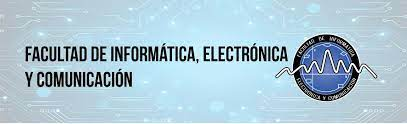

Facultad de Informatica,Electronica y Comunicacion

Mision y Vision
Mision
Somos una Unidad Académica que crea, desarrolla, coordina y promueve el saber de las tecnologías en los campos de la Informática, Electrónica y Comunicación de acuerdo con los requerimientos actuales y futuros del país y de la región para la formación de profesionales de excelencia con conciencia social, valores y comprometidos con su entorno a través de la Docencia, Investigación, Producción, Servicios, Extensión y Divulgación.
Vision
Ser una Unidad Académica líder en las áreas de Informática, Electrónica y Comunicación, comprometida con el desarrollo nacional e internacional, promoviendo la innovación tecnológica a través de la Docencia, Investigación, Extensión Producción y Servicios.
Carreras de la Facultad de Informatica , Electronica y Comunicacion
LICENCIATURA EN INGENIERÍA ELECTRÓNICA Y COMUNICACIÓN
Perfil de el egresado: El egresado de esta carrera es un profesional de la Ingeniería con conocimientos de la teoría y de la práctica de sistemas y de dispositivos electrónicos utilizados en diversas aplicaciones industriales, comerciales, residenciales y otras instalaciones especiales. Es capaz de atender y resolver problemas de la comunicación y de la electrónica en todas sus fases.
LICENCIATURA EN INGENIERÍA EN INFORMÁTICA
Perfil de el egresado: El licenciado en Ingeniería en Informática egresado de esta carrera debe ser un profesional de la Ingeniaría poseedor de conocimientos multidisciplinarios, científicos y tecnológicos necesarios para aplicar la informática en diversos ambientes tales como: Industrial, Teleinformática, Comercial, Educación, Doméstico y Social.
La formación Matemática y de Informática pura brindan al Licenciado en Ingeniería en Informática las facilidades para la realización de investigaciones en Tecnología Informática de punta.
LICENCIATURA EN INFORMÁTICA APLICADA A LA ENSEÑANZA E IMPLEMENTACIÓN DE TECNOLOGÍAS
Perfil del egresadoEl Licenciado en Informática Aplicada a la Enseñanza e Implementación de Tecnologías debe ser: Un profesional poseedor de las teorías de aprendizaje, con técnicas y estrategias didácticas y conocimientos humanísticos, científicos y tecnológicos, que lo habilite para aplicar de manera integral la Informática a ambientes educativos y empresariales; favoreciendo la correspondencia entre los requerimientos de la sociedad en el sistema educativo y productivo del país y el saber de su especialidad.
LICENCIATURA EN COMERCIO ELECTRÓNICO
Perfil del egresadoEl joven que egrese de la Carrera Licenciatura en Gerencia de Comercio Electrónico, deberá poseer el siguiente perfil:
Conocer el desarrollo del comercio electrónico como opción personal.
Habilidad para desarrollar las estrategias de ventas «online» para el comercio.
Creativo y comunicativo mediante el empleo de estrategias y experiencias prácticas de Marketing más relevante para el mercado de nuevas tecnologías en la sociedad de la información.
Ofrecer una visión actualizada del panorama de los usuarios de Internet y su evolución a lo largo del tiempo.
Participa creativamente en los problemas y sus formas de solución.
Reflexiona e investiga permanentemente en aras de buscar el éxito y la eficiencia.
Expresa curiosidad y cuestiona constructivamente el mundo globalizado que le rodea.
INGENIERÍA MECATRÓNICA
Perfil del egresadoConoce los fundamentos básicos en ciencia y tecnología necesarios para las ingenierías.
Utiliza enfoques estructurados para el desarrollo del emprendimiento empresarial de forma optimizada.
Planifica y administra, científica y técnicamente los recursos económicos y financieros de las empresas e instituciones, gestionando los riesgos considerando la ética, la moral y el desarrollo social.
Plantea estrategias para desarrollar el talento humano alineadas a las políticas de la organización, considerando aspectos éticos y legales, con la finalidad de preparar a la empresa para enfrentar los desafíos de la competencia.
Aplica las tecnologías existentes y emergentes.
Aplica los métodos teóricos y prácticos apropiados al análisis y solución de problemas de ingeniería.
Desarrolla actitudes creativas e innovadoras de la tecnología en ingeniería y de los sistemas de mejora continua.
Diseña, instala, da mantenimiento y opera sistemas automatizados.
Desarrolla, implanta y mantiene sistemas de control de procesos.
Diseña e implanta sistemas integrados.
Diseña circuitos y sistemas electrónicos analógicos, digitales, mixtos y de potencia.